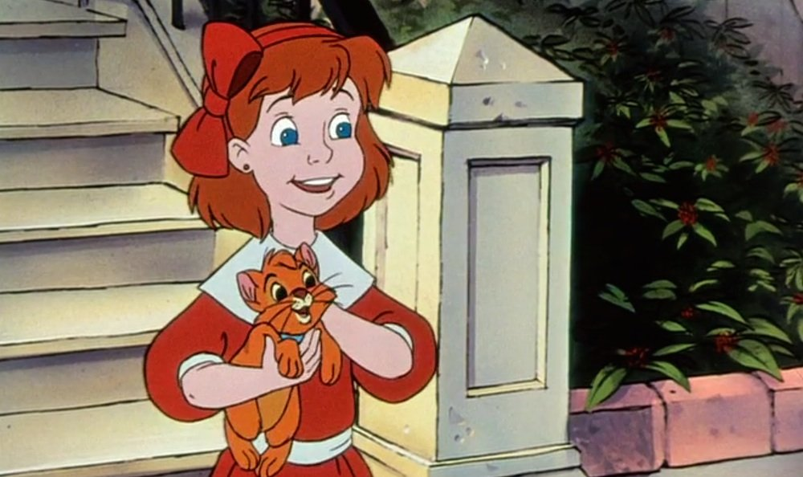

Joey Lawrence as Oliver:
an orange orphaned kitten
Lead Actress

Natalie Gregory
(Myhanh Tran, singing) as Jennifer
"Jenny" Foxworth, a kind-hearted,
rich girl who adopts Oliver.
Rated G
Summary
Oliver & Company is a 1988
American animated musical adventure
film produced by Walt Disney Feature
Animation and released on November 18,
1988, by Walt Disney Pictures. It is
loosely based on the Charles Dickens
novel Oliver Twist. In the film, Oliver
is a homeless kitten who joins a gang
of dogs to survive in the streets.